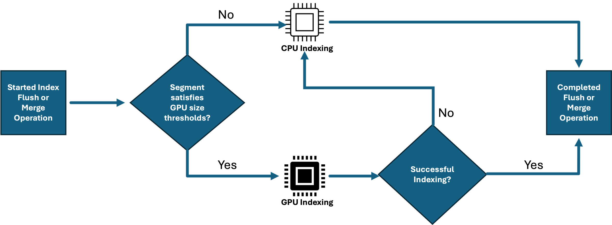
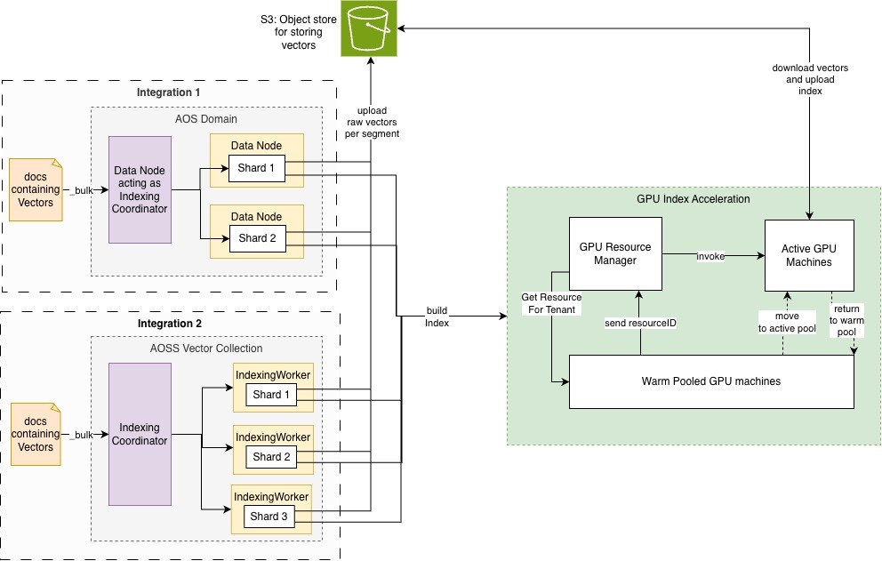
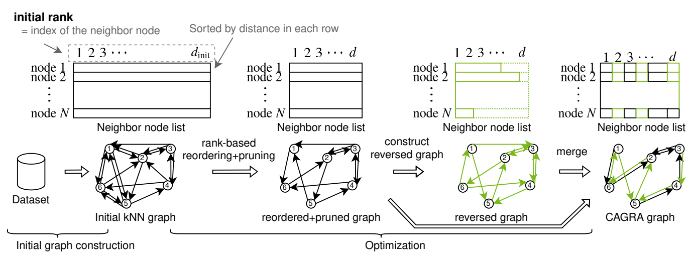
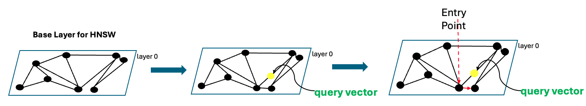

GPU加速在Amazon OpenSearch Service上构建十亿级向量索引
DataHot 速览
Amazon OpenSearch Service和OpenSearch Serverless现已支持GPU加速的向量k-NN索引，可将十亿级向量索引构建时间从数天缩短到数小时。本文深入介绍了解耦的GPU架构、CAGRA到HNSW的转换过程，以及基于十亿个1024维向量的基准测试。该能力基于NVIDIA cuVS库，在GPU构建索引的同时，现有CPU基础设施可继续提供搜索服务。文章还分享了生产环境运行GPU加速索引构建的最佳实践。
为什么值得关注：向量索引是大规模AI应用的关键基础设施，GPU加速方案能显著降低索引构建时间和成本，数据平台从业者应关注其架构与生产实践。
译文
AI 逐段翻译现代搜索要求高性能的向量索引和可扩展性，以跟上生成式 AI 应用的快速增长。当数据集增长到数十亿时，传统的基于 CPU 的索引常常成为瓶颈，阻碍生产力和创新速度。
利用 GPU 加速的向量（k-NN）索引现已可用 在 Amazon OpenSearch Service 和 Amazon OpenSearch Serverless 上，您可以高效地扩展到数十亿向量。该功能由 NVIDIA cuVS 驱动，这是一个用于 GPU 加速向量搜索的开源库，它可以将计算密集型的向量索引构建任务卸载到专用的 GPU 工作节点，而现有的 CPU 基础设施继续提供搜索服务。结果是，大规模向量索引的构建更快、更经济，且不影响查询性能。
我们之前的文章详细介绍了这些性能和成本优势。本文将进一步深入探讨该功能的工作原理。我们将介绍实现这一点的解耦架构。我们解释如何将 GPU 构建的索引转换为 CPU 数据节点可以搜索的索引，且质量不受损失。我们还将展示该方法在规模上的表现，使用十亿个 1024 维向量进行基准测试。最后，我们分享在生产环境中运行 GPU 加速索引构建的运营最佳实践。
使用场景与优势
随着各行业公司构建 AI 驱动的和智能体应用以提供更丰富的客户体验，GPU 加速的向量索引有助于多种使用场景。以下是一些示例：
- 更快采用新的嵌入模型： 当组织升级到更新的嵌入模型时，必须重新生成并重建所有向量。对于数亿到数十亿的向量，CPU 重建可能需要数天或数周。GPU 加速将重建时间缩短到数小时，因此您可以迁移到更高质量的模型，同时显著减少重新索引窗口和可用性风险。
- 加速大规模重新索引： 一个管理数十亿产品列表、客户评论和行为信号的全球电子商务应用，必须在添加新产品和嵌入时快速重建其向量索引。GPU 加速在紧凑的操作窗口内完成此任务，保持搜索相关性最新。
- 吸收突发或持续高写入： 一家报道大型体育赛事（如世界杯或奥运会）的媒体公司，需要同时索引数百万条实时嵌入。这些嵌入涵盖比赛亮点、评论片段、运动员简介和粉丝生成内容，数百万观众同时搜索相关内容。GPU 工作节点吸收索引突发，不与提供实时搜索流量的 CPU 节点竞争，避免通常伴随大量写入的延迟峰值。
- 为混合读写工作负载合理调整集群规模： 零售系统传统上过度配置其 CPU 集群，以处理目录刷新期间的峰值索引负载和并发搜索流量，全天候支付峰值容量费用。通过将索引卸载到 GPU，CPU 集群可以仅为搜索进行合理调整，从而在保持性能的同时降低基础设施成本。
- 加速向语义搜索或 OpenSearch 的迁移： 无论您是首次将基于文本的语料库转换为向量嵌入，还是将现有的向量工作负载从其他数据库迁移到 Amazon OpenSearch Service，GPU 加速索引将数天的索引构建压缩到数小时，跟上上游 GPU 驱动的嵌入生成，并最小化切换风险。
GPU 加速何时激活？
一旦您选择启用，GPU 加速会自动激活。在 OpenSearch Service 域中，您通过打开 Vector Acceleration 选项来启用它，从那时起，无需更改代码或 API 标志。在 OpenSearch Serverless 上，对于 NextGen 向量搜索集合，GPU 索引构建加速默认开启。图 1 展示了索引构建工作流程。OpenSearch 根据段大小自动将向量索引操作路由到 GPU 或 CPU，优化性能，并在出现问题时回退到 CPU。
当 OpenSearch 刷新或合并段时，它将段的向量数据大小与一个由 可配置窗口 界定的范围进行比较，该窗口由 index.knn.remote_index_build.size.min 和 index.knn.remote_index_build.size.max 界定。下限默认为 50 MB。高于下限的段被卸载到远程 GPU 工作节点，较小的段在本地 CPU 上构建。段向量大小计算如下：
segment_vector_size = num_vectors × dimensions × bytes_per_element
这意味着两个具有相同文档数量的工作负载可能产生不同的段大小：
| 向量数 | 维度 | 编码 | 段向量大小 |
| 100,000 | 1536 | Float32 | ~586 MB |
| 100,000 | 768 | Byte | ~74 MB |
两个示例都超过了默认的 50 MB 下限，因此在默认设置下，两个段都会被卸载到 GPU 工作节点。

图 1：索引构建的简化流程
解耦索引架构
OpenSearch 索引内部被划分为多个段，每个段包含自己的向量图。这种段级结构使得 GPU 卸载变得可行。每个段的图可以在 GPU 工作节点上独立构建，无需跨整个索引进行协调。在此基础上，关键的架构见解是将向量索引的位置与搜索的位置分离。现有的 CPU 数据节点继续处理摄取、搜索和非向量工作负载。当段准备好进行向量索引构建时，繁重的图构建工作被卸载到专用的 GPU 工作节点，完成的索引返回给数据节点以供服务。
索引构建工作流程
- 摄取 – 带有向量字段的文档照常被摄入到您的 OpenSearch Service 域或 OpenSearch Serverless 集合中。向量在 CPU 数据节点的段中累积。
- 卸载 – 当段刷新或合并且其向量数据进入 GPU 激活窗口时，数据节点将原始向量上传到 Amazon Simple Storage Service (Amazon S3) 并提交构建请求。
- 构建 – 来自托管热池的 GPU 工作者接取任务，加载向量，并使用 CAGRA（CUDA ANN Graph）构建索引，这是 NVIDIA cuVS 中的 GPU 原生图算法。生成的 CAGRA 图随后转换为与基于 CPU 的搜索兼容的层次导航小世界（HNSW）图。
- 返回 – 完成的 HNSW 索引被写回 Amazon S3 并由数据节点下载，然后用于提供搜索查询。
完全托管的 GPU 索引构建
启用向量加速，Amazon OpenSearch Service 处理其余部分：
自动扩缩容 – GPU 工作者根据待处理构建任务的数量自动上下扩缩。在批量摄入或重建索引期间，会启动更多 GPU 工作者来处理负载。当队列清空时，它们会缩减到零。
自动实例选择 – 服务根据段大小为每个构建任务选择正确的 GPU 实例类型。您无需进行容量规划或实例选择。
仅为活跃构建付费 – 仅当 GPU 活跃构建索引时收费，空闲时不收费。即使您的域或集合上启用了向量加速，GPU 费用（以 OpenSearch 计算单位（OCU）衡量）也仅在段达到激活阈值并触发索引构建时产生。没有常驻 GPU 基础设施成本。
因此，您的成本直接随索引活动而扩展。突发的重建索引工作负载在构建期间消耗 GPU 容量，并且 GPU 成本在下一次构建之前恢复到零。
图 2 展示了解耦的 GPU 工作流程。Amazon S3 充当数据节点和 GPU 工作者之间的中介，使它们能够独立运行。数据节点将原始向量上传到 Amazon S3，GPU 工作者构建 CAGRA 图并将其转换为 HNSW，完成的索引返回给数据节点以供服务，搜索全程不间断运行。

图 2：GPU 索引流架构
深入了解 CAGRA 到 HNSW 的转换
在上一节中，我们描述了 GPU 工作者如何构建向量索引并将其返回给数据节点。但 GPU 构建的图如何能在 CPU 上被搜索，这种转换会牺牲质量吗？简而言之：不会。
CAGRA 算法
GPU 工作者使用通过 Faiss 库的 cuVS GPU 后端集成的 CAGRA 算法。Facebook AI 相似度搜索 (Faiss) 库。CAGRA 是一种从头为 GPU 加速构建的基于图的索引方法。它首先使用另一种近似最近邻方法（如 倒排文件与乘积量化 (IVF-PQ) 或 最近邻下降 (NN-Descent)）构建 k-NN 图，然后移除邻居之间的冗余路径，形成一个可导航的搜索图。

图 3：CAGRA 图的构建流程
来源：CAGRA：面向 GPU 的高度并行图构建与近似最近邻搜索
GPU 工作者如何构建索引
当 GPU 工作者收到向量索引构建请求时，请求携带构建段特定向量索引所需的参数。向量索引构建组件通过从 Amazon S3 检索向量文件并将其加载到 CPU 内存来启动该过程。然后使用 Faiss 利用这些向量构建 CAGRA 索引。在 GPU 上构建 CAGRA 索引后，系统将其转换为 HNSW 图格式，以兼容基于 CPU 的搜索操作。生成的索引上传到 Amazon S3，完成构建请求。
将 CAGRA 图转换为 HNSW
典型的 HNSW 索引是多层层次图。图的 底层（第 0 层）包含向量，上层是仅用于导航的稀疏子集。它们帮助搜索算法找到进入底层的好入口点。然而，我们的 HNSW 实现使用 CAGRA 图作为底层，并且类似于 CAGRA 搜索方法，从随机入口点开始进入图，完全避免了上层的需要。
这意味着 GPU 处理构建基础层图的繁重工作。将该图重用为 HNSW 基础层避免了在 CPU 上重建它，从而保持了较低的转换开销。如图 4 所示，CAGRA 图成为基础层。在查询时，搜索选择图中一组随机节点，并通过跟随最近邻链接进行遍历。这被称为贪婪搜索。

图 4：搜索 HNSW 转换的 CAGRA 图
相同的召回率，更快的构建
之前的 基准测试 已确认 GPU 构建的索引实现了与 CPU 构建的 HNSW 相同的召回率，没有质量折衷。这是因为 CAGRA 产生的基础层图结构在连接性和搜索质量上与 HNSW 在 CPU 上构建的等效。只是构建方法不同。
超越 GPU 内存的扩展
核外构建
传统的 GPU 索引要求整个数据集驻留在 GPU 内存中，这根据可用硬件对索引大小造成了硬性上限。CAGRA 通过 核外 k-NN 图构建当使用 IVF-PQ 为 CAGRA 构建初始 k-NN 图时，数据会分批从系统内存流式传输到 GPU，因此完整数据集无需一次性放入 GPU 内存。同时，GPU 仍处理计算密集型的距离计算和图优化。
量化
GPU 加速索引支持 OpenSearch 中可用的量化级别，包括 2 倍、8 倍、16 倍和 32 倍压缩。量化应用于之前向量被发送到 GPU。这减少了传输到 GPU 工作进程的数据量以及图构建期间的内存占用。这意味着您可以在更大的段上构建索引，从而提高成本效率。
在 GPU 上索引十亿个 1024 维向量
数据集设置
为了评估真实的大规模工作负载，我们使用了一个包含十亿个 1024 维向量的数据集。由于均匀随机向量在索引构建和召回率方面都会产生误导性结果，我们需要保持真实世界嵌入结构的数据。我们使用 cuVS 合成数据集生成器在 cuvs-bench 中创建了此数据集，该生成器输出的合成数据分布类似于从 Common Crawl 派生的实际嵌入数据集。您可以使用这种方法构建真实数据集，而无需暴露或分发敏感原始数据。该生成器可以在单个 Amazon Elastic Compute Cloud (Amazon EC2) g6e.16xlarge 实例上大约两小时内生成完整的十亿向量数据集、10,000 个查询向量以及相应的真实标签。
集群配置
我们按照 OpenSearch 向量搜索性能调优 最佳实践 在 OpenSearch Service 上设计了基准测试集群，并使用 OpenSearch Benchmark 框架 进行了基准测试。
| 设置 | 值 | 理由 |
| 数据节点 | 24 × r8g.4xlarge | 内存优化实例，用于大型向量索引 |
| 主分片 | 48 | 保持分片大小可管理并最大化并行性 |
| 副本 | 0 | 最大化索引吞吐量。构建后添加副本 |
| GPU 工作进程 | 10（预扩展） | 避免测量期间的冷启动效应 |
| 批量客户端 | 160 | 使 24 个节点上的摄取管道饱和 |
| 批量大小 | 500 文档/请求 | 平衡每请求开销与内存压力 |
| 刷新间隔 | -1（摄取期间） | 防止创建小段。摄取后强制合并 |
| 合并自动调节 | 禁用 | 避免基准测试期间的人工瓶颈 |
应用的关键最佳实践
- 内存优化实例 – r8g.4xlarge 为加载构建后的 HNSW 图提供了足够的堆内存和原生内存。
- 批量摄取期间禁用刷新 – 防止创建许多小段，这些小段会各自触发单独的 GPU 构建。
- 高批量客户端数 – 使摄取在节点间饱和，并确保 GPU 忙于构建索引。
我们使用了 OpenSearch 中的默认 HNSW 构建和搜索设置（例如 m 和 ef_construction），因为默认值是大多数用户起步时使用的，并且它们使基准测试具有代表性。
基准测试结果
| 数据集 | 索引（分钟） | 召回率 @k=100 | 召回率 @1 | P50（搜索） | P90（搜索） | P99（搜索） | 使用的向量加速 OCU |
| 1024D 1B | 274 | 0.93 | 0.93 | 26.47ms | 32.5ms | 66.6ms | 44 |
构建时间与数据量线性扩展
我们之前 在 OpenSearch Service 上的基准测试 对十亿个 128 维向量（BigANN SIFT 数据集）进行索引，耗时约 35.5 分钟。在最新的基准测试中，我们将维度扩展到 1024（8 倍），并在 274 分钟内完成了索引构建，大致与数据量增加成比例。这表明随着维度增加，GPU 加速保持一致的吞吐效率：构建时间随数据量扩展，而不是固定的启动成本，因此您可以根据数据集大小可预测地估计索引构建时间。在此规模下搜索延迟也保持较低，因此生成的索引支持响应式查询，而不会牺牲构建速度。
优化 GPU 加速索引的批量摄取
加载大量向量数据时，临时调整索引行为可以显著减少 GPU 处理开销。如果您的用例可以容忍短暂的数据陈旧期，这种方法有效。在完整索引构建期间，这通常是可以接受的，因为新摄取的向量在您重新启用刷新之前不可搜索。通过禁用批量摄取期间的刷新（"index.refresh_interval": "-1"），您可以防止连续创建小段。否则，每个小段都会触发单独的 GPU 构建作业。摄取完成后，我们启用刷新间隔并完成刷新，使段可搜索。这意味着 GPU 可以跨大型、紧密打包的段构建向量索引一次，而不是在多个小段上反复构建，从而实现更快的整体索引吞吐量。
启用 GPU 加速后，您可以通过 Amazon CloudWatch 指标（集群级）和 OpenSearch k-NN 统计 API（节点级）监控构建。如果 GPU 构建失败，系统会自动回退到基于 CPU 的索引构建，因此您的数据仍然会被索引。
未来优化
目前，构建完成的 HNSW 索引（图结构和向量）会通过 Amazon S3 从 GPU 工作进程传输回数据节点。由于数据节点已经本地拥有原始向量，未来的优化将只传输图结构（邻居列表）。这将显著减少写回 Amazon S3 的数据量以及下载到数据节点的时间。
结论
GPU加速索引功能可让您在Amazon OpenSearch Service上以小时而非天为单位构建十亿级向量索引，同时无需更改OpenSearch Service域和OpenSearch Serverless集合中的查询服务方式。在本文中，我们展示了OpenSearch Service如何将符合条件的索引构建任务卸载到GPU工作节点，通过Faiss中的NVIDIA cuVS后端构建CAGRA图，并将其转换为CPU可搜索的HNSW索引。随后，我们在十亿1024维向量上展示了该方法的规模化应用，并分享了优化批量写入以及监控构建活动和OCU使用情况的最佳实践。
开始使用
准备好尝试GPU加速向量索引了吗？在支持的AWS区域，您可以在创建或更新运行OpenSearch 3.1或更高版本的OpenSearch Service域时启用GPU加速。使用AWS管理控制台、AWS命令行界面（AWS CLI）或AWS SDK。对于新的OpenSearch Serverless部署，创建一个NextGen向量搜索集合，其中GPU索引构建加速默认启用，并可为单个索引进行控制。对于Classic向量集合，在集合级别启用GPU加速。
致谢
作者感谢NVIDIA的Ben Gardner、Manas Singh、Zack Meeks、Jiahong Liu、James Yi和Jinsol Park为本文所做的贡献。